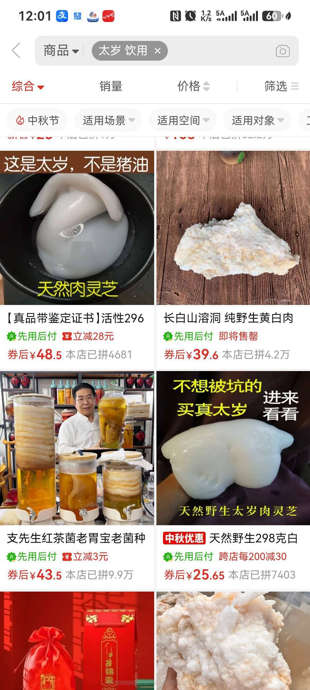
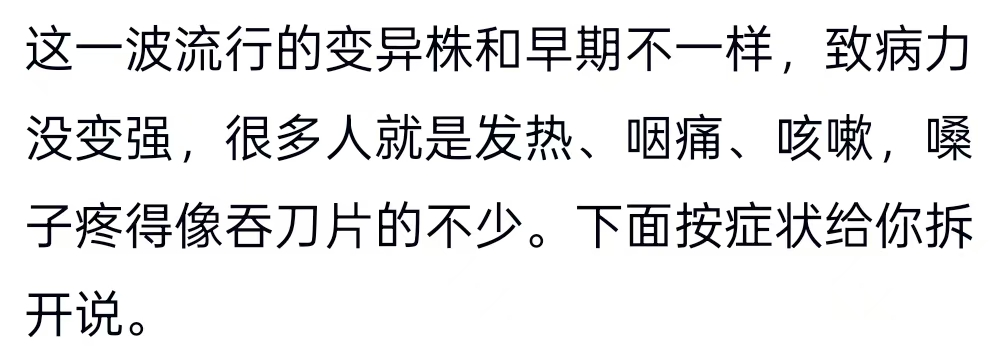
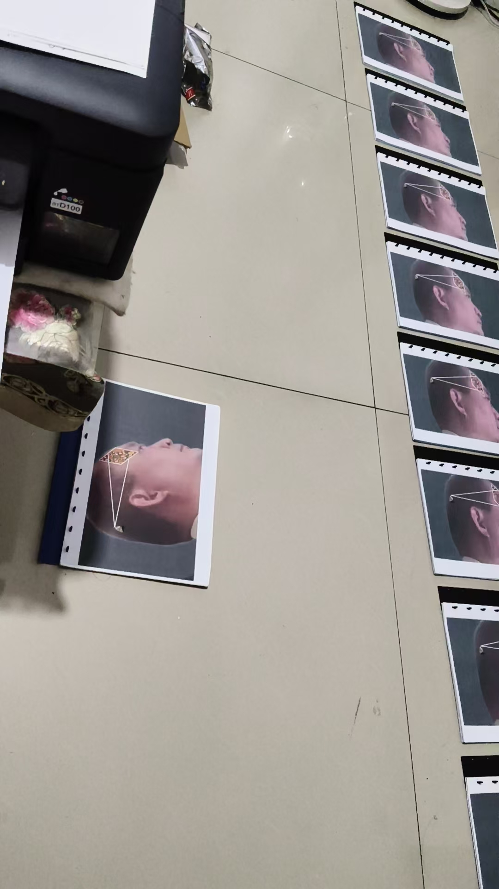

20260921如何彻底清理体内新冠病毒
符咒术法风水布局读经
继续打印教材
脑海里说，这次打印十二份
可想而知，
这次打印，把华严经里精彩章句，翻译过来，加进去
超能力，随时用，验证准确，越用越灵
研究生获得两万国奖，今天PPT演讲，
还没开始呢，突然，喉咙干，咳嗽干呕
我说，我给你加念力，自己也观想，嘴里含薄荷片
席地清凉
马上就好了，现在演讲已经结束
[呲牙][呲牙][呲牙]
我问如何彻底清理体内新冠病毒
体内各种变异，比如肺结节，心脏弱，刺痛，有的胃不好，吃不下饭了，有的突然尿不下来了，
深入骨髓？
各种各种，发烧后就出现各种异变问题
这次，大范围感冒发烧，监测，还是新冠变异菌
种类繁多
杀死体外体表病毒的，就是氨咖黄敏片
复方金刚烷胺
感康
是一种东西
另外，脑海里出了个太岁
这个别外传，不确定
太岁是神秘生物
脑海里出了个，太岁不能直接杀死病菌病毒
但能以病毒病菌为食
也就是说，能慢慢吃掉病毒病菌
可以买十块钱的，养着，喝泡的水
研究常年喝太岁水的，普遍长寿
哪有10块钱的太岁？
真的太岁都很贵
网上有，
[呲牙][呲牙][呲牙]
你别买一个
买五十克
团购一波
泡在水里，自己长大
千年不坏
不是说了，别宣传
自己试用，绝对没问题

中间男的那个，是红茶菌
不是太岁
用凉开水泡吗？
古代用来养胃的
煮红茶，黄糖水，冷透后，倒进去，养红茶菌，每天喝了，加茶水
太岁就用直饮水，矿泉水都行
泡着喝水
又出了个，加持过的太岁水
[憨笑][憨笑][憨笑]
更有效
我有一个太岁，一万多。很多假的
[呲牙][呲牙][呲牙]
就是听说很多假，所以如何买到真太岁是关键
真的会长
@无道子 你的还用买，是送的吧[呲牙][呲牙]
应该说价值一万多
[呲牙][呲牙]
[捂脸]
我脑屏准确率来说，应该错不了
很多是红茶菌假冒
再有一个，就是能量粒子
高智慧特异生命体
还有是橡胶
分身达到六十纳米以下，能阻隔，或杀死新冠病毒
新冠病毒个体平均六十纳米
就是个微生物，小虫子
[强]
喉症丸

拆分些出来养[呲牙]
要给太岁喂食物吗
不用
看拼多多说给营养液
清水就行
我哥家有一口井，不用的，我想搞个大点的，养在里面
@欢欢 自己就生好多颗粒
一个颗粒就是一个新太岁
不过，长的很慢
不用切吗？
不切就分生颗粒
切开又会重生
所以说，买五十克，就能长上百斤 ，需要上千年
所以说搞不好，自己活不过他
[呲牙][呲牙]
只能传给子孙
经典的层次高低，是看谁在听，人数多少决定的
有部经，是比丘比丘尼
二千人俱
这样的就是上乘经典中的初级
一直到华严经，
有十佛世界微尘数，菩萨摩诃萨所共围绕
层级高，菩萨在听，
数量极多，不可数
也就是上乘高级经典
为什么国际上不允许把月球，火星或者其他星球的土壤带回来
就是发现每个星球都有微生物
带回来多了，变异，人类根本没法掌控
美国和中国都带回来了
目前没有发现月球土壤有微生物
都带回来一点点
政治家都在掩盖事实
真人老师，我有一块太岁，用农夫山泉泡的，喝完太岁水就窜，没敢喝[捂脸]
月球背后有外星人联盟
有天文望远镜的都能看到，月球那经常飞出巨型ufo
@VV 你肚子凉，可以四十度再喝
好的，谢谢真人老师
再说一个问题
现在不少机构老师，引导孩子分身化身
分身学习法
咱们的孩子是我给他们打造的分身化身，高维能量产物
引导出来的，不是正修，质地不纯，是阴神
去搜一下，阳神跟阴神的来历，
阳神与阴神的区别
听说个名词，你就会
国外评价国人，模仿跟造假能力很强
[呲牙][呲牙][呲牙][呲牙]
我不会攻击损毁任何一个人，但要实事求是
别蒙着眼带孩子，害人害己

一边打印资料，一边冒两句
搬运来的一分一毫，都不能留下私用
法界追责，人间犯法
明白了吧
开始，他就是让你搬运一分的，一角的
若果私用，搬运钱财，这功能消失
张宝胜，杨德贵，这些真正搬运的人，都不敢花
必须还回去
自己审查一下，自己跟孩子做到了吗
搬运的手机，绝对不能用
顶多算个神偷
无缘无故受国法制裁，就要先考虑一下，是不是违背了自然律条
大自然律条
小时候我抄了两个小本子，但发现，比现在的法律还要繁杂
就没再写
你们有独到的记忆力传承资格，也不知道你们有没有教学资格
更何况，传法资格
搬运之类都是法术类
及早收手，免遭祸患
我是菩萨戒居士，我有传法资格
并且我是师门关门弟子，传承人
那不是一般资格
你们太危险了，仿佛在悬崖边缘
[憨笑][憨笑][憨笑][憨笑]
打印告一段落，哔哔完了
读经去